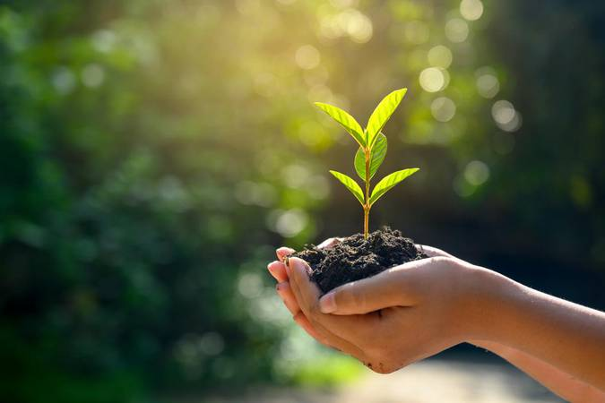

Nosso planeta, nossa responsabilidade 🤓
Meio ambiente é o conjunto de elementos, processos e dinâmicas biológicos, físicos e químicos que criam condições e mantêm a vida no planeta Terra, compreendendo também os seres humanos e as dinâmicas sociais, culturais e econômicas. O meio ambiente é composto pela biosfera, hidrosfera, atmosfera e litosfera. É dele que retiramos os elementos essenciais para a nossa sobrevivência, como água, ar, alimentos e matérias-primas, um dos motivos pelos quais a sua conservação se faz tão importante.
Como cuidar do meio ambiente?
cuidar do meio ambiente é essencial para garantir um futuro sustentável para as próximas gerações. pequenas atitudes no dia a dia fazem toda a diferença, como reduzir o consumo de plástico, separar o lixo para reciclagem e economizar água e energia. além disso, optar por meios de transporte sustentáveis, como bicicletas ou transporte público, ajuda a diminuir a emissão de gases poluentes na atmosfera, contribuindo para a qualidade do ar e a redução do aquecimento global.
outra forma importante de preservar a natureza é apoiar práticas de consumo consciente. dar preferência a produtos biodegradáveis, reutilizar materiais sempre que possível e evitar o desperdício são ações que ajudam a minimizar o impacto ambiental. plantar árvores, proteger áreas verdes e conscientizar outras pessoas sobre a importância da preservação também são formas de fazer a diferença. quando todos se comprometem com pequenas mudanças, o impacto positivo no planeta se torna gigantesco.
Como ajudar em casa com o meio ambiente 🌱
- reduza o uso de plástico → evite descartáveis e prefira reutilizáveis.
- recicle corretamente → separe o lixo para facilitar a reciclagem.
- economize água → feche a torneira ao escovar os dentes e reutilize água sempre que puder.
- use menos energia ⇉ desligue luzes e aparelhos quando não estiver usando.
- escolha meios de transporte sustentáveis → ande de bike, transporte público ou carona compartilhada.
- pratique o consumo consciente → compre apenas o necessário e prefira produtos sustentáveis.
- plante árvores e cuide das áreas verdes → ajuda no clima e na biodiversidade.
- conscientize outras pessoas → espalhe a ideia e incentive mudanças ao seu redor.
Outras Referências 🌎
Quer saber mais informações sobre o nosso querido meio ambiente? acesse os sites abaixo! 🔥 ✍